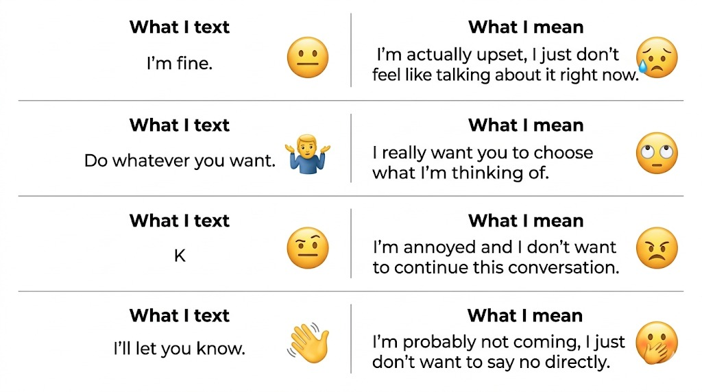
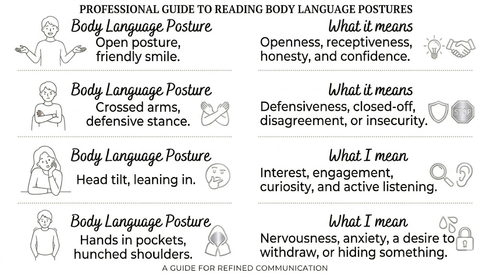

English Portfolio · 2026
A curated collection exploring communication — how we speak, listen, misunderstand, and connect through words, images, and sound.
Essay · Bhargavi Panwar
Communication is at the heart of every relationship. It shapes how people understand each other, solve problems, and build emotional connections. Within all phases of human relations, how individuals express and interpret messages can either strengthen their bonds or slowly weaken them.
Good communication helps us build trust and understanding. When people express their thoughts clearly and listen carefully, they create a safe space where both feel valued and respected. It is small actions like being honest, acknowledging other people's feelings and responding thoughtfully can make a huge difference. For example, addressing conflicts calmly instead of avoiding them helps resolve misunderstandings before they grow into larger issues.
Similarly, poor communication can destroy relations. Misunderstood messages or an inability to express feelings often lead to confusion and frustration. Over time, this can create riffs between people. Misunderstandings can create unnecessary arguments, even when both sides mean well. The problem often lies not in what is said but in how it is expressed.
Communication is also important for building emotional connections. Feeling truly heard and understood is the key to close bonds between people. Active listening without interruptions shows empathy and strengthens ties amongst people. Being inattentive or insensitive during conversations can leave someone feeling unimportant and ignored.
In conclusion, the quality of communication directly affects relationships. Effective communication creates trust, clarity, and emotional closeness, while poor communication leads to misunderstandings and distrust. We should communicate properly by speaking carefully and listening with sincerity so that we can strengthen our relationships and live in harmony and peace.
✦ Reflection
Reflecting on this essay, I realize just how central communication is to every relationship in our lives. It's easy to assume that speaking and listening are straightforward, but even small misunderstandings can create tension or distance if we're not careful. What stood out to me most was the idea that communication isn't just about what we say, it's also about how we say it and how we listen. I've noticed in my own experiences that when I avoid expressing my true feelings, even simple conflicts can grow into bigger problems, which reinforces how important honesty and clarity are.
I also found the discussion of nonverbal cues and active listening particularly meaningful. We often overlook body language, tone, and attentiveness, yet these elements carry so much of the message. Thinking about times when I've felt unheard, I can see how much impact small gestures like maintaining eye contact, pausing to listen, or acknowledging someone's emotions can have on a conversation.
Overall, this essay made me more aware of my own communication habits and inspired me to focus not just on speaking clearly but on listening genuinely. It reminded me that improving communication is an ongoing process, and that even small efforts can greatly strengthen relationships.
Meme · Visual Communication


✦ Reflection
Communication is a multifaceted process that goes well beyond the words we use. Image 1 highlights a common challenge in today's digital world: the gap between what someone texts and what they truly mean. This discrepancy often leads to misunderstandings because text messages lack tone and expressions. By showing the contrast between the literal message and the real feelings, this idea emphasizes how important clarity and emotional awareness are in digital communication. Without these, simple phrases can be misinterpreted, causing confusion or emotional distance.
Image 2 complements this by drawing attention to the powerful role of nonverbal communication. Body language, such as crossed arms, eye contact, and posture, communicates emotions and intentions that words alone may fail to express. These physical cues provide valuable context that helps people understand each other more fully and create stronger emotional bonds. Recognizing and interpreting body language correctly is essential because it can either reinforce or contradict spoken words, significantly affecting the quality of interaction.
Together, these ideas shows the complexity of communication and the need to consider both verbal and nonverbal elements. They remind us that to connect authentically and avoid miscommunication, we must be mindful not only of what we say but how we express it, whether through text or body language.
Podcast · Oral Communication
🎵 Upload your podcast audio file and replace the src="" in the HTML to enable playback.
✦ Reflection
Miscommunication is a common experience that often goes unnoticed until it causes confusion or conflict. This podcast highlights key reasons why we frequently misunderstand one another: tone, assumptions, and poor listening. The absence of vocal tone in texts can drastically alter how messages are interpreted, turning a simple word like "okay" into something with unintended negative emotion. This lack of clarity often leads people to assume the worst, which only helps with the miscommunication further.
This podcast also points out how assumptions can cause misunderstandings rooted in personal feelings or past experiences. This is a powerful reminder that communication is a two way process requiring efforts from both sides. Moreover, the emphasis on truly listening rather than just waiting to respond is crucial. When people don't listen carefully, the core message is lost.
The personal story shared illustrates how hiding true feelings can deepen miscommunication and emotional distance. The suggested solutions are being clearer with words, asking questions, and practicing active listening are essential steps toward improving communication. Overall, this podcast sheds light on why we miscommunicate and how we can do better.
Artificial intelligence was used only for creating and designing the website used to present this portfolio. All the content included, such as essays, reflections, and interpretations, has been written entirely by me.
AI was not used in generating any of the written material, ensuring that the ideas and expressions remain original and based on my own understanding and learning.